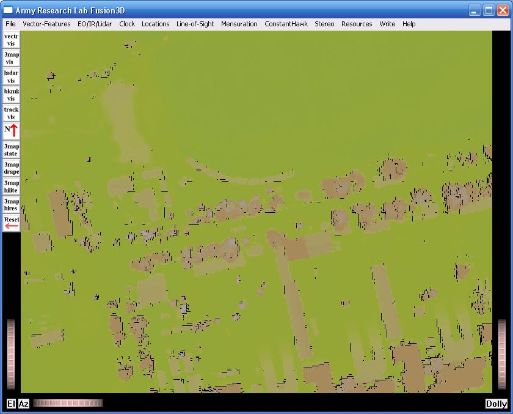
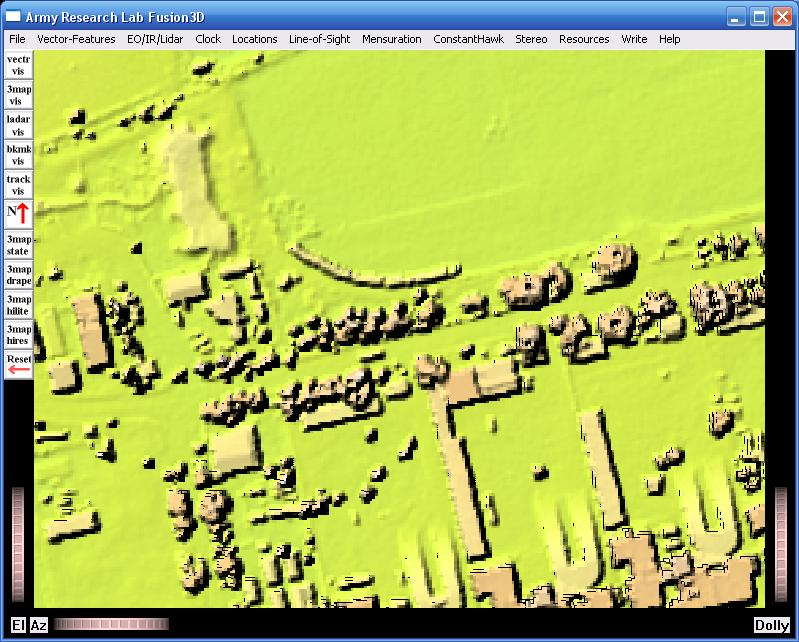

HILLSHADING
The viewer is designed to work with a combination of DEM and texture files.
A DEM file can be loaded and visualized without texture but is very hard to interpret.
The best texture file is a high-resolution orthophoto, but almost any texture aids significantly in interpreting a DEM.
Almost all lidar elevation maps come with coresponding lidar intensity images.
These images have information that complements the DEM such as differing intensities between a road and adjacent ground
which may not show at all in the DEM where elevation differences are minimal.
If only a DEM is available, then a useful option to improve visualization is to create a hillshaded texture image.
Below is a portion of a map where DEM only is shown.
False color derived from elevation provides some contrast between different features but interpretation is very difficult.

Below is the same portion of the map where hillshading has been added.
Interpretation is considerably easier.

There are a number of different algorithms and software packages for creating Hillshaded texture images.
One utility that provides good hillshades and works with the Fusion3D viewer is included in GDAL
which is open-source and free.
GDAL utilities work from within a shell window and a typical command from that window is shown below:
gdaldem hillshade dem_1m_a2_baghdad2_tile37.tif hillshade.tif
This command created from the input DEM file 'dem_1m_a2_baghdad2_tile37.tif' an 8-bit intensity image that produced the hillshaded display shown above.